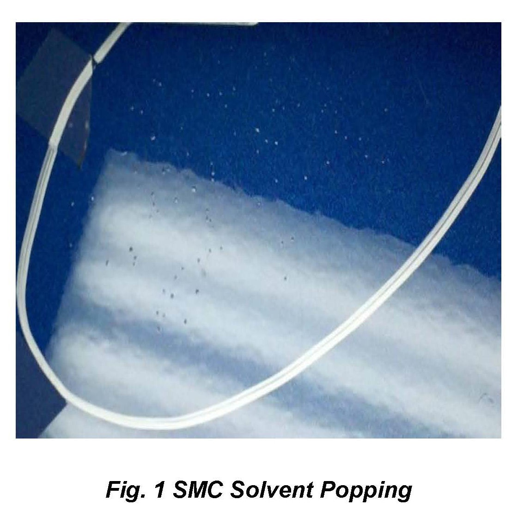
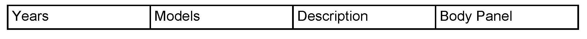
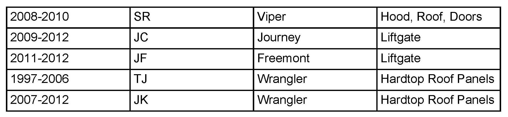

Body - Don't Apply Corrosion Protection On Plastic Panels
NUMBER: 31-005-12GROUP: Collision Bulletin
DATE: August 03, 2012
SUBJECT:
Do Not Apply Corrosion Protection On SMC (Plastic) Panels
OVERVIEW:
This bulletin involves discussing SMC (plastic) panels and applying corrosion protection.

DISCUSSION:
The application of corrosion protection on SMC (plastic) panels is unnecessary and not recommended. It can adversely affect the paint or any other coating applied to the substrate. In some instances it can cause a condition commonly referred to as solvent popping shown in (Fig. 1). Although the condition appears to be repairable, it will reoccur because the SMC substrate is porous and has essentially absorbed the corrosion inhibitor, which will cause the condition to reoccur. Panel replacement is required when solvent popping is evident on SMC (plastic) panels when corrosion protection materials have been applied.


Unique SMC (Plastic) Applications Include But Are Not Limited To:
POLICY:
Information Only.
Disclaimer:
This bulletin is supplied as technical information only and is not an authorization for repair.